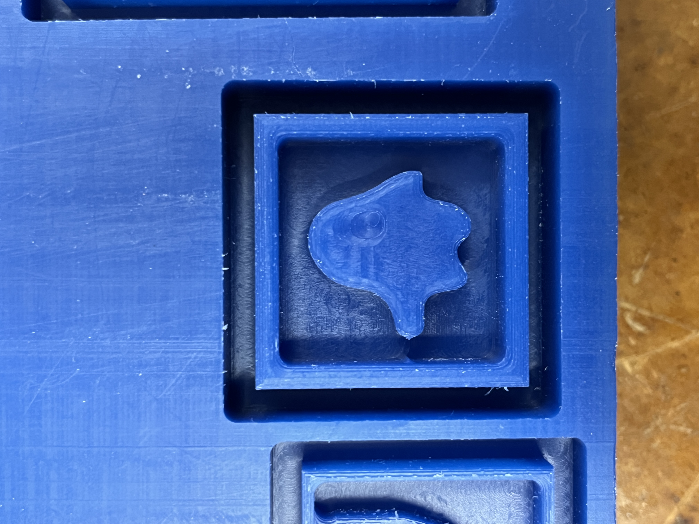
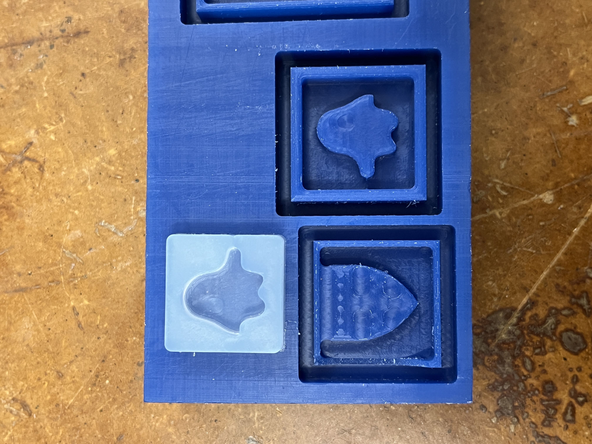

Week 8: CNC Milling
Assignment: Make Something With CNC
For CNC week, I wanted to make an ice cube mold, so I designed a ghost-shaped ice cube in Fusion 360. My plan was to mill a 2.5D mold using the SRM-20.
At first, my model was too large. The estimated milling time for the mold was over two hours. So I decided to scale the entire model down and simplify the process by milling just one of the ghost molds. This adjustment saved time and still allowed me to test the core idea.


Molding Process
The final mold lacked some of the finer details I initially designed. I think this was caused by the mold's small overall size and the diameter of the CNC milling bit, which limited the amount of detail that could be milled.


